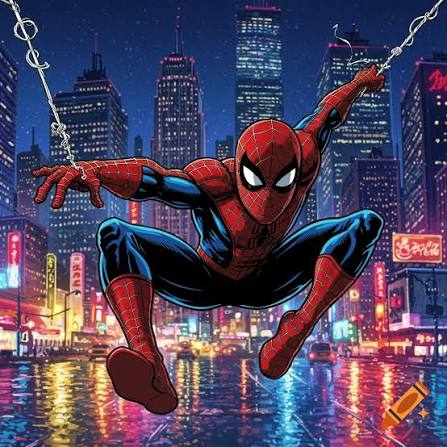
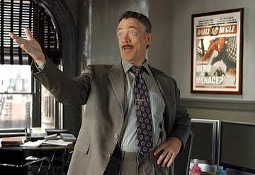
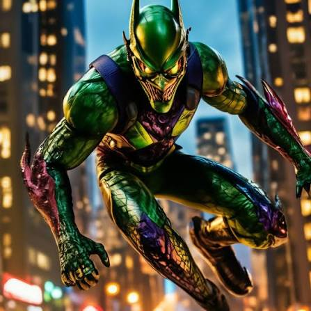
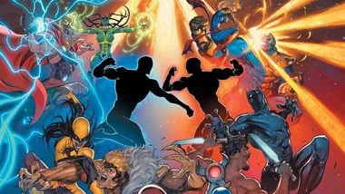
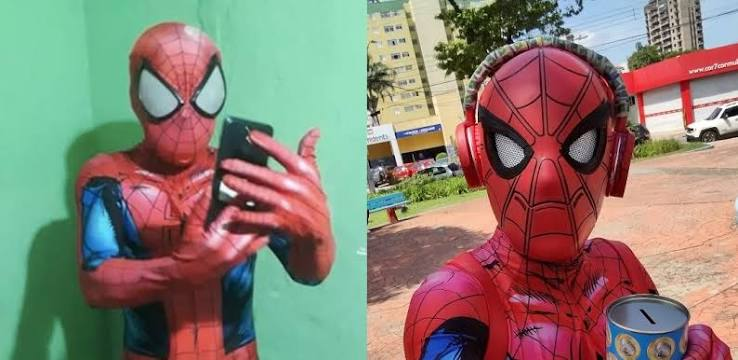

Homem-Aranha é multado por estacionar teia em local proibido
Prefeitura afirma que o herói deixou teias presas em postes, placas e até em um carrinho de cachorro-quente.
Leia a notícia sobre a multa do Homem-AranhaA verdade acima de tudo!

Prefeitura afirma que o herói deixou teias presas em postes, placas e até em um carrinho de cachorro-quente.
Leia a notícia sobre a multa do Homem-AranhaPrefeitura afirma que o herói deixou teias presas em postes, placas e até em um carrinho de cachorro-quente.
Leia a notícia completaPrefeitura afirma que o herói deixou teias presas em postes, placas e até em um carrinho de cachorro-quente.
Leia a notícia sobre a multa do Homem-Aranha
Editor afirma possuir “provas irrefutáveis” após encontrar teia perto de uma pizzaria.
Leia a notícia sobre Jameson e a pizza
Alunos relatam ameaças de recuperação, um apagador usado como arma de precisão e comportamento altamente suspeito.
Leia a notícia sobre o novo Duende Verde
Heróis passam 40 minutos perguntando “vocês estão me ouvindo?” enquanto Nick Fury tenta compartilhar a tela.
Leia a notícia sobre a reunião dos Vingadores
Doutor Estranho classificou a dimensão como uma possível ameaça de nível máximo à humanidade.
Leia a notícia sobre o portal do multiversoPassageiros afirmam que só perceberam o erro quando o próprio mago perguntou onde estava.
Leia a notícia sobre o portal errado
Morador afirma que mudou a senha após notar consumo misterioso de internet durante a madrugada.
Leia a notícia sobre o Wi-Fi do Homem-Aranha
Deus do Trovão diz que pode ter deixado o martelo em algum lugar entre Manhattan e Asgard.
Leia a notícia sobre o Mjölnir perdidoAdvogados afirmam que a declaração tecnicamente não ajudou em nada a defesa do herói.
Leia a notícia sobre a confusão na fila
Funcionários afirmam que o simbionte perguntou se “rodízio ilimitado” realmente significava ilimitado.
Leia a notícia sobre Venom no rodízioJ. Jonah Jameson ainda acredita que o Homem-Aranha é culpado por tudo.